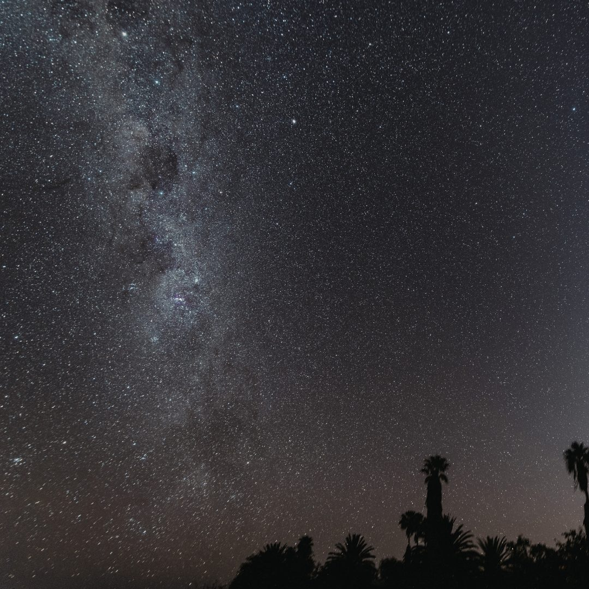

O Céu como Guia: Saberes, Tempos e a Construção do Olhar
 Elaine Imenes · 4 min de leitura
Elaine Imenes · 4 min de leitura

Olhar para o céu nunca foi um ato passivo. Ao longo da história, essa prática orientou a marcação do tempo, regulou atividades e ofereceu as referências necessárias para situar o indivíduo em um conjunto maior de relações. O céu funcionou como guia para os ciclos da vida, as decisões coletivas e a organização do cotidiano. Recuperar essa atenção ao que está no alto não é um retorno ao passado, mas um modo de recolocar o tempo em perspectiva e restabelecer balizas que foram sendo progressivamente apagadas.
Diferentes povos constroem formas próprias de interpretar o firmamento. O que se reconhece nele depende do modo como se aprende a olhar: há culturas que destacam o brilho das estrelas, outras que percebem o sentido nas sombras entre elas; algumas traçam figuras, outras identificam movimentos e ritmos. Essas diferenças não são apenas variações de interpretação; expressam modos distintos de organizar a experiência e de compreender a relação entre o céu e a vida.
A astronomia cultural no Brasil investiga como esses olhares estruturam a própria existência. O céu não é um cenário distante; é uma referência concreta para a marcação do tempo, a orientação do trabalho e o posicionamento do indivíduo dentro de um mundo comum.
Entre os povos originários, essa relação é intrínseca. As Plêiades, por exemplo, aparecem em diferentes tradições indígenas como marcador sazonal, associadas às chuvas, ao plantio ou à coleta (Afonso, 2005; 2014). A Via Láctea não se limita a um aglomerado estelar; torna-se um território onde se inscrevem narrativas. A constelação do “Homem Velho”, identificada nas manchas escuras da galáxia, exemplifica uma percepção que não depende da luz, mas valoriza os contrastes e as ausências (Afonso et al., 2011).
Essa leitura do céu não se separa da terra. Observar o alto significa acompanhar ciclos ambientais e ajustar as práticas sociais a essas variações. O conhecimento se forma na experiência direta, na repetição e na transmissão entre gerações, respondendo às demandas da vida prática.
No campo acadêmico brasileiro, a astronomia cultural investiga como as sociedades constroem essas interpretações. Trabalhos como os de Walmir Cardoso destacam que essas leituras são formas estruturadas de conhecimento, vinculadas à cultura e à transmissão coletiva (Cardoso, 2016).
As matrizes africanas também participam dessa construção. Nelas, os astros se articulam a divindades e forças da natureza, compondo sistemas de correspondência que orientam rituais e a memória coletiva. O céu atua como um fio de continuidade entre territórios e tempos distintos (Silva, 1996).
A aproximação com a astrologia se sustenta quando ela é compreendida além das previsões imediatas. Assim como na astronomia cultural, a astrologia parte da ideia de que os movimentos celestes funcionam como referência para a organização do tempo humano. Historicamente, ela se desenvolve na observação sistemática, muito antes da separação entre ciência e símbolo. A correspondência entre macrocosmo e microcosmo estabelece um nexo entre os ritmos do cosmos e os processos da vida (Campion, 2009).
No panorama contemporâneo, a astrologia pode ser retomada como uma linguagem de leitura de processos. Em vez de causa mecânica de eventos, ela opera como uma estrutura simbólica que auxilia na compreensão de experiências e fases da vida. Esse diálogo com a astronomia cultural fortalece sua base ao recolocar o céu como medida de tempo.
Essa integração tem impacto na educação. Ao considerar a pluralidade de saberes, amplia-se o ensino sobre o céu, evitando o tecnicismo e as abordagens superficiais. O que está em jogo não é substituir uma forma de conhecimento por outra, mas reconhecer que o céu sempre admitiu múltiplas leituras (Jafelice, 2015). No Brasil, esse campo revela uma convivência entre tradições. Saberes indígenas, africanos e europeus se entrelaçam. Nesse encontro, o céu deixa de ser apenas objeto de estudo e passa a orientar a leitura da vida.
Referências
Afonso, Germano Bruno. As constelações indígenas brasileiras. Rio de Janeiro: Telescópios na Escola, 2005.
Afonso, Germano Bruno. O céu dos índios do Brasil. In: Reunião Anual da SBPC, 66., 2014, Rio Branco. Anais da 66ª Reunião Anual da SBPC. Rio Branco: SBPC, 2014.
Afonso, Germano Bruno; Fernandes, Jaime Moura; Nadal, Thaisa Maria; Silva, Paulo Souza da. A constelação do Escorpião na mitologia indígena. Ciência Hoje, Rio de Janeiro, v. 47, n. 280, p. 40–45, 2011.
Campion, Nicholas. A history of western astrology. London: Continuum, 2009.
Cardoso, Walmir Thomazi. Astronomia cultural: como povos diferentes olham o céu. E-Boletim da Física, Brasília, v. 5, n. 5, p. 1–8, 2016.
Jafelice, Luiz Carlos. Astronomia cultural nos ensinos fundamental e médio. Revista Latino-Americana de Educação em Astronomia, São Carlos, n. 19, p. 57–92, 2015.
Silva, Alberto da Costa e. A enxada e a lança: a África antes dos portugueses. 2. ed. Rio de Janeiro: Nova Fronteira, 1996.